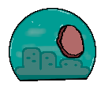
Capture utopia pointsHowdy expedition commander! Mission briefer here. You are to capture utopia structures like oil wells or warehouses. Alongside other structures or mechanical units ("mechas" per bunker slang) that let our military control utopia sources. When world pollution fills, eta somewhat over 15 minutes, return safely and you will be set for life in the bunker hierarchy.
Do not forget; the most utopic our bunker, the more people will stay with us instead of leaving in desperation and die out in the fumes. We must walk away with more utopia than any other enemy. See controlled utopia and pollution status at the top right hud.
Prevent enemies from gaining control of our structures; utopia only matters at the end, after all. Be especially vigilant against late rushes. Be the one to do it instead. If you can time it correctly. Depending on circumstance, there are other ways to increase our utopia too; you may encounter espers that have stayed aboveground, or techs like PROPAGANDA. By the way, there is a compendium of all techs at the end; they are written capitalized.
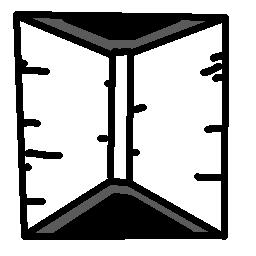
Camp
Our underground bunker will send fodder -sorry, reinforcements- here periodically. As long as we are below the cap of what our glorious industry can sustain. The cap already accounts for maximum profit margins, sure. But, once reached, we can still go over it by capturing more mechas. Nobody would complain about having more of those.
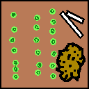
Field
Reports say that plants have -I quote- "gone grazy". Honestly, to be expected after what we did to the environment. Barren fields grow, bloom, and turn back to barren periodically. While there are crops, we can squeeze industrial capacity out of them. Like juice. But better. Serve the personnel something other than canned food and they will work harder too. The FARMING tech, should you choose to pursuit it, will let us keep fields in bloom for longer.
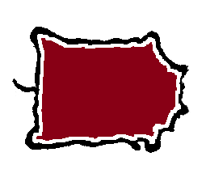
Hide
Dropped by hunted bisons, like in the good old neolithic days. The base of excellent material to fuel our industry, especially since it somehow keeps growing with all the radiation keeping the cells active. But hides can spoil at random. If they do, you will be able to tell. From the rats gnawing at their remnants.
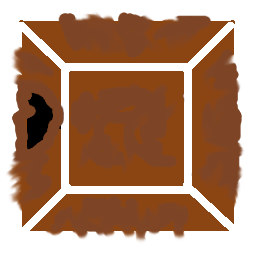
Mine
There used to be mines everywhere in the before times. But only those up the mountains remain uncollapsed. Perhaps they were farther away from the blasts targeting cities. Anyway, mines are a pain to capture, what with snowmen, enemy turrets, and slow capture time. But well worth the effort, I am told. Industry rules! Ah, some things never change, even if you are above- or below- ground.
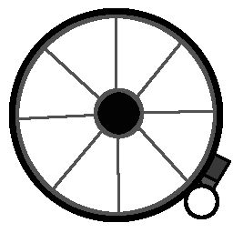
Oil well
There is no way an utopia can exist without some black gold to trade and fuel everyday activities. Like cleansing water by heating it up. We do have the technology to be fully renewable, but it's too expensive and the damage has already been done anyway. Oil can be found mainly in deserts. The REFINERY tech adds 25 industry for each well, letting it power our infrastructure aside from being bragging rights.
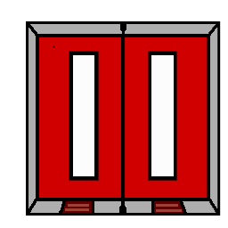
Storage
Remaining storage warehouses have been carefully mapped by all bunkers. So everyone knows where they are from the start. Expect fierce competition, but if you are first you can capture the railguns the patrolling military used. Or let the others fight it out and sweep in later. Your head, your call. All types of useless goodies in there can help further our utopia.
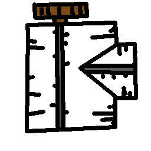
Curio
These are trinket production facilities from the old civilization. Somehow, a lot have survived. Perhaps the leaders felt levelling them was the one line they could not cross? Who knows what those idiots were thinking. Anyway, good for bragging rights. What's that Alex? Oh, he says you can take advantage of the many rats infested there. Either tame them or use their blood clots for a stream of bloo... Of for the love of- here comes the manic laughter again. Someone come relieve of caretaker duty!
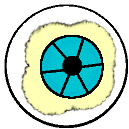
Big bro
Facilities that carefully "collect" and "curate" entertaining material. They sure can make us look good, and motivate the populace. If you do not mind the council complaining about it, try the AI FARM tech; will turn your big bro and AI labs into pure industrial production megaliths. Nothing better than sloppily mining private data for scaling all sorts of infrastructure. Oh, by the way, too much industry increase pollution, which means that your mission may need to conclude more quickly. But who cares? Our predecessors made sure that we do not.
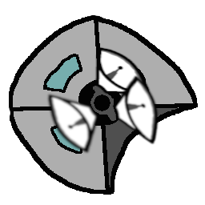
Radio tower
In the late days before midnight, once it became certain that those in charge would doom civilization, there was mass hysteria about not being able to meme about it. There are a lot of hobby communication towers remaining from that time. Of course, everyone else is the enemy now. But hobbyists have always been touched in the head; we can readily convert their unnecessarily sophisticated equipment into far-reaching radars. The MEDIA tech doubles the range; pretty impressive if the radio is up the mountains. Perhaps research some PROPAGANDA to convince everyone of our utopia?
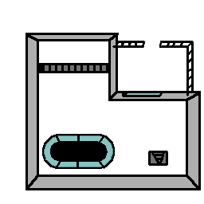
Lab
Ah, where would we be without the old research facilities? BIOWEAPON. Use them to recover techs enough for practical use. BIOWEAPON. There are many combinations that I find particularly interesting. Like- BIOWEAPON. Ah, the previous expedition's commander is here with me as I transcribe this message and he is quite ...fixated... on a particular research field. BIOWEAPON. BIOWEAPON. Alex! Stop shouting! We know you went all-in in one of the techs that led to the Midnight. No, stop giggling at your selfie of all those radioactive bloos swarming everyone else- no, give me the controller! No, I need to explain why AI farms are ba-
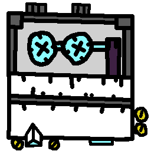
Databank
Hi, hi, Alex here... Listen while my clarity lasts. Not usually mentioned in these manuals but I saw it; you need no fancy techs. Just luck. There are a lot of discarded databanks; make personnel shift through their records. The higher ups fear the discovery of other governance systems but it's so worth it. There may emerge health manuals to help everyone, repair instructions for mechas (motivating their drivers to fix everything immediately once), and how-to videos for acquiring tech knowledge. But beware that some leaking substance tends to turn blood into bloo creatures more frequently than normal around datacenters. Bloo. Bloo. Blooooo. Ha- haha. HAHAHA! BIOWEAPON!
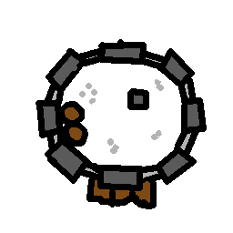
Fort
Hello, briefer here again. Once you acquire the FORT tech, humans and tanks can be stationed into fortifications operating at minimal industry cost. Having them in one place weakens the combat power quite a bit, but the practice has a very good operational ratio of combat prowess per industry consumed. Excellent for establishing defensive positions. Only, be careful that enemies can capture the fort too.
Human
Our core human unit, permitted to leave the bunker only under your command. Fast turning speed. Can become stronger by fighting and capturing stuff; first a Veteran and eventually a Hero. These are not mere titles -who would care for them?- but a representation of tank-comparable destructive force on a single human. The HELLBRINGER tech is aptly named, because it's what heroes feel like when equipped with its rapid firing ability.
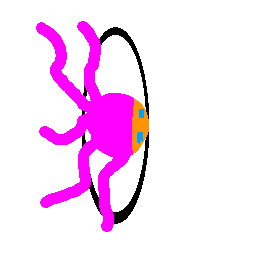
Esper
A paranormal person that somehow survives in the surface. One theory says that espers are former radio station operators merged with their equipment. However, they are too powerful to have been mere nerds. Once overcome for a moment, espers will nod once and keep wandering randomly. They never listen to commands, but the higher-ups say that acknowledgement by any esper is good news for our fledgling utopia.
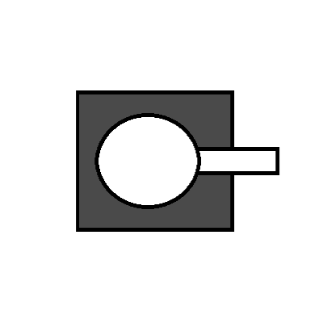
Tank
Heavy mecha, remnant of the wars from the before times. Discover and reclaim them. They do cost industry and we have no way of fixing them when damaged. But they are a terror. Half the survivors from past expeditions suffer from trauma due to those. They will be the first to be let go if our bunker utopia starts losing its ability of self-sustenance.
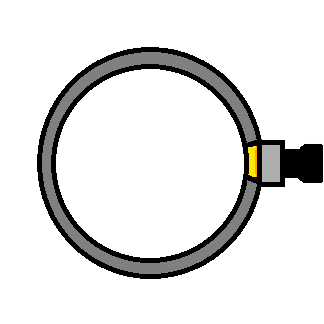
Railgun
A mecha with high damage throughput left behind by old sentries. Obviously cannot move and it is slow in turning around, but with some support a fine defensive point. We often choose a first camp location amidst several of these. Good for racing to espers and distant structures. MOBILE FORT is heavily recommended as a tech goal, idle railguns can be repurposed as tanks.
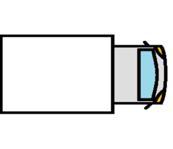
Van
Fast scout mecha. They say everyone used to drive cars, but only the heavily armored vans have survived enough to be salvageable. Low damage but huge speed advantage; the qualities that let us win world wars two and four, by transporting troops and drone engineering teams around. Good for exploration and racing to strategic locations, either to temporarily stall off enemy advances, or be reinforcements.
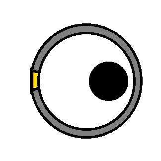
Roomba
People used to be obsessed with autonomous vacuum cleaners. Before they realized that a robot uprising would start from these. Many have been unceremoniously damped in the forests for safety. We managed to end civilization both before the robots gained sentience and before the plastic became an environmental hazard too. And the nuclear winter kept them cool. Our technicians can repurpose the roombas for defensive purposes, but the blasted nerds refuse to violate the laws of robotics and are too valuable to execute for insubordination. So these cleaners can deal only with animals and bloos. Other mechas are obviously too sturdy for them too. If found, to be used as distraction or as pest cleaners. As they say "vroom-vroom, ****ers". Oh, got censored by the transcription service.
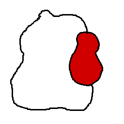
Bloo
The radioactive atmosphere lets blood come back to life. Or at least as something that resembles life. Spawns from blood pools. There is a whole tech branch for handling those. Because what's better than an abomination is an abomination you can control. For example, HOMUNCULI converts killed bloos to allies.
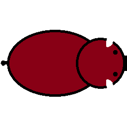
Bison
Bisons graze on grass and attack violently after evolving into top tier predators. The biggest beneficiaries of the Midnight crisis, if I can be allowed to comment. So much so that there was that bedtime story about bisons being a secretly intelligent species manipulating humanity behind the scenes. Their aggressive and self-centered temperament did not differ to that of our leaders after all... Bisons drop their hide on death; capture those too for some nice industry bonuses. Tame-able with the right tech.
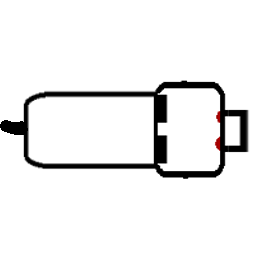
Wolf
Fast predator. We think these are mainly dogs that have gone feral in the long absence of humans. 50-50 chance to be tamed again. No tech required for this. After all, we do have dogs down here in the bunker too. These just bite more. I USED TO HAVE A DOG. Thank you for the input, Alex. Why am I the one you are bothering today again?
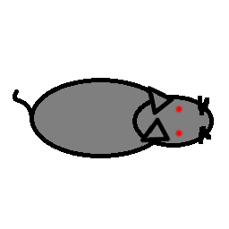
Rat
Weak individually but proliferates fast. Spawns from old hides, and can be sometimes found in massive numbers in the mountains. Ask any divine that did not intervene during Midnight to save you if you encounter a rat swarm. You might encounter some lesser swarms and think that you can handle the pesky pests. YOU WILL KNOW WHEN YOU ARE IN TROUBLE.
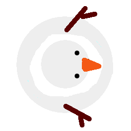
Snowman
The robot revolution never came. But somehow new life was still created in the form of snowmen. Some argue they are previously unseen yeti that have grown bolder. Hogwash. If blood can come to life (I mean bloo) so can a snowman with a carrot nose. Perhaps the carrot is the important part, being organic matter and all. Slow on plains, but extremely fast on hills and mountains. Also extremely aggressive. Perhaps this is just what sentient life has evolved to during the nuclear winter. What's that Alex? He says to research the EVOLUTION tech to learn how to create your own.
Units earn experience from kills and captures. Basically, when they do something other than waste bunker resources. With enough experience they become veterans, and afterwards heroes! Each promotion increases size, damage, and max health. Heroes keep improving with random gains, including to sight and speed. Ah, the limitless potential of humanity! Yet our mild brainwashing -standard practice on deployed troops- always holds; they will keep following commands even in their enhanced state. We have some uniforms for the improved ranks to set them up as motivational figures. LIKE INFLUENCERS! Yes, thank you for the input, Alex.
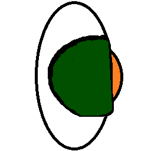
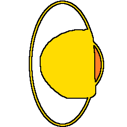
Mechas or, more accurately, mecha driving personnel, can gain experience too! However, you need the INDUSTRY tech to let them modify their vehicles to suit them. HEROICS tech gives veterans and heroes 30% dodge by putting them through some quick but effective training. This includes high-level advice like ducking when others aim their barrels right at them. Highly effective in rough terrain.
Do not forget your training, commander! Quick copy-paste from the manual below. Because everything underground is concrete flat and narrow, so five out of five commanders skip reading about the terrain, even if they still pass the exam. Oh, not talking about you obviously... ... Thank professor Burguare for making this section mandatory. Or at least leave a stone on the mount of gratitude that has formed over his ashes' storage container.
All kinds of terrain should be taken into consideration. Units will move slower in rough terrain, and have increased or decreased sight -meaning attack range too- elsewhere. As a general rule, all non-grass terrain hampers speed but also grants dodging to units inside. It also restricts sight, unless it is in higher altitudes. Rough terrain offers opportunities to dodge. Techs like AGILE can also make the penalties felt only by enemy primates.
Leverage differences at the points where terrain changes to gain an advantage. Or straight up fight at places that are advantageous for your combination of units and tech. For example, dealing with animals is easier in forests but you can stall a lot with the added dodging by placing units in water. Humans can circle around slow-turning mecha for hit-and-run tactics. And much more. You can always be creative with your micromanaging, should you choose to be more hands-on. Reminder to not neglect your total command for too long, though.
Grass
Full speed. Neutral sight. Most structures can be found here.
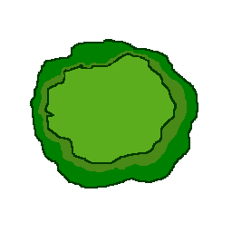
Forest
Slow. Bad sight. Roombas lurk here.
Desert
Slightly slow. Bad sight. More oil and mechas here. AGILE reduces penalty.
Hills
Slightly slow. Double sight. Rats and railguns here.
Mountain
Slow. Double sight. Mines here. Snowman habitat.
Water
Very slow. SEAFARING makes water a speed boost instead.
Research fills automatically because we did provide some scientists to run our newest portable agents. The most anti-social ones because the higher-ups don't like them. Dunno why. They leave you alone and produce results. Capturing labs can help them speed up. Select what to unlock on the tech tree. Each unlock costs one full research bar. Straightforward, huh? Also completely unrealistic. If only we could tell in which places the scientists are slacking, we could further optimize the process. Unfortunately, all of them have some agreement and keep their mouth shut.